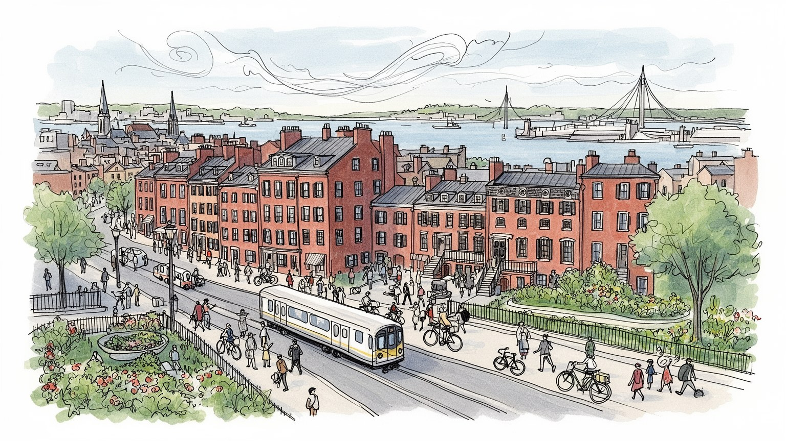
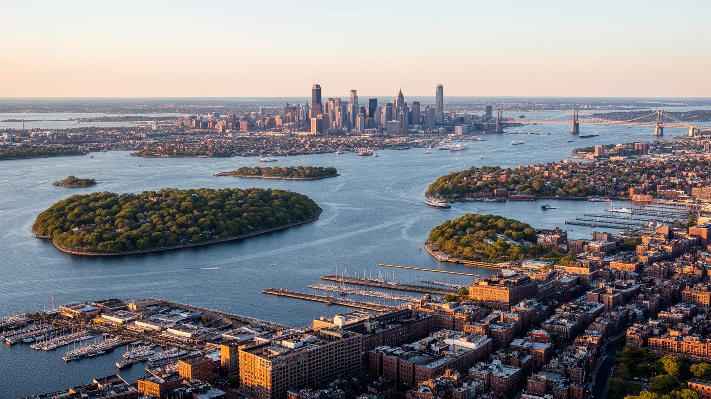
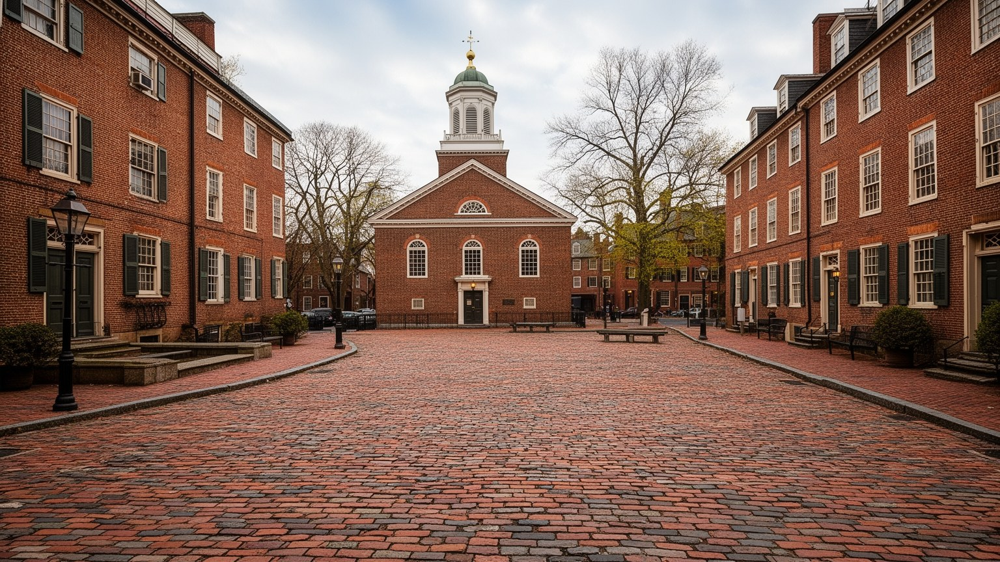
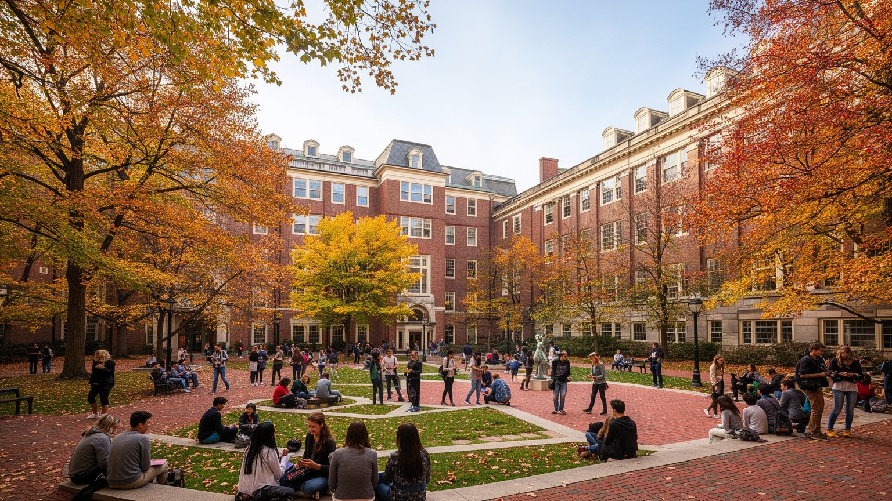
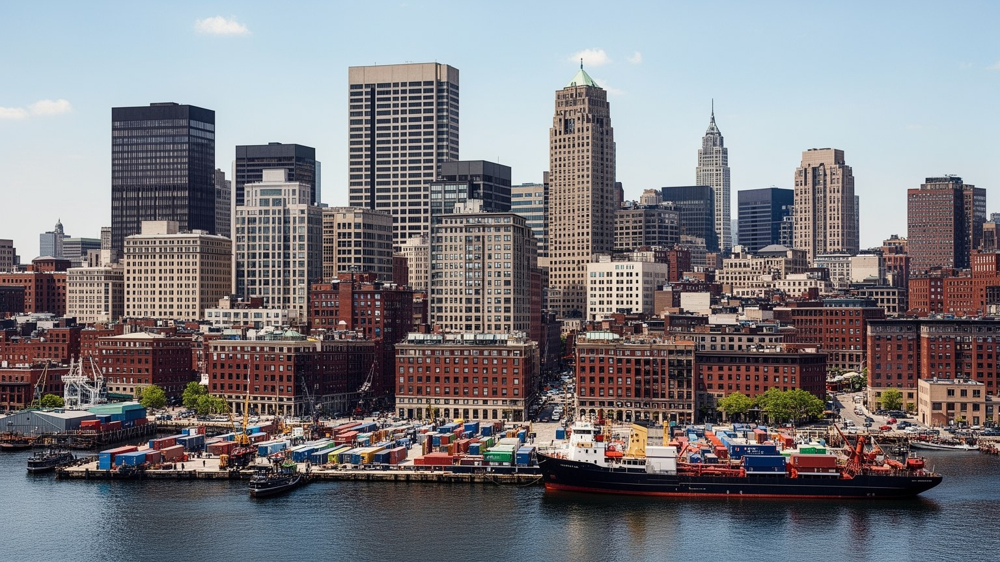
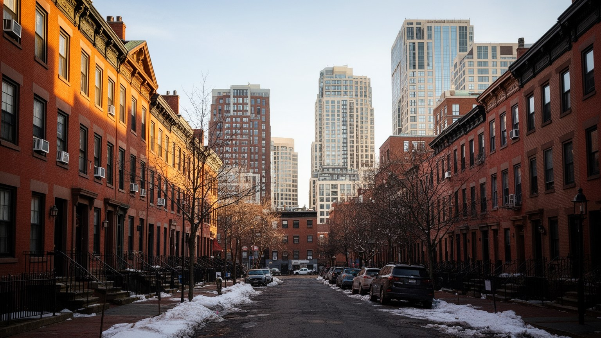
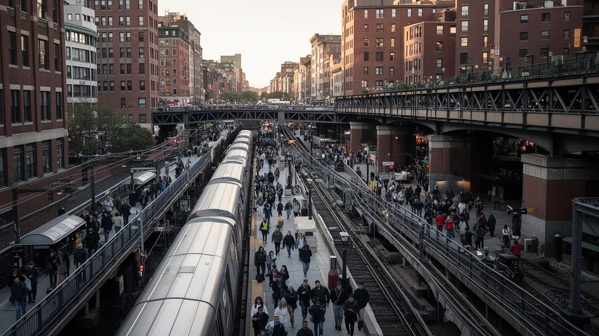
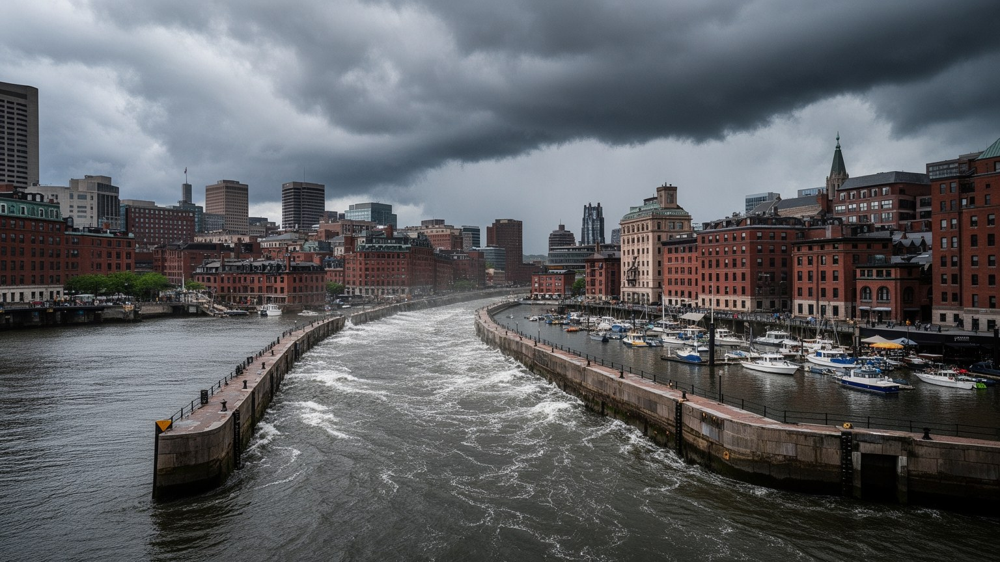
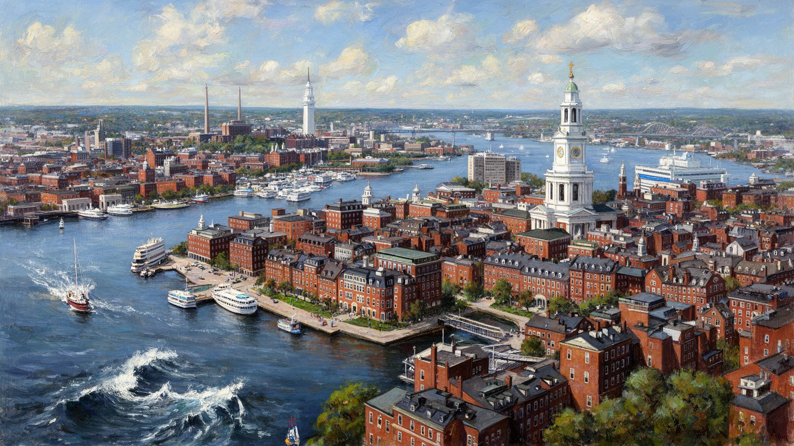

地政学
ボストンはニューイングランドの政治、教育、医療、港湾を束ね、北東部の都市網と大西洋を結ぶ。連邦政治の中心ではないが、大学と研究機関を通じて政策、人材、技術の議論に強い影響を持つ都市だ。歴史記憶も濃い。

🇺🇸 アメリカ合衆国 / 北米 / World City Atlas
港、独立革命の記憶、大学、医療、バイオ、金融、移民地区、住宅難が重なるニューイングランドの知識都市。
都市の骨格
マサチューセッツ湾、チャールズ川、大学群、病院、研究所、金融地区、移民の近隣が、歴史の小さな市街地を広い都市圏へ押し広げている。

ボストンはニューイングランドの政治、教育、医療、港湾を束ね、北東部の都市網と大西洋を結ぶ。連邦政治の中心ではないが、大学と研究機関を通じて政策、人材、技術の議論に強い影響を持つ都市だ。歴史記憶も濃い。
大学、病院、バイオテック、金融、保険、港湾、観光、公共部門が雇用を作る。高賃金の研究職と、清掃、介護、配達、飲食、建設、空港労働が近接し、知識経済の足元を日常労働が支える都市である。賃金差も大きい街。
ピューリタンの記憶、カトリック教区、ユダヤ教、黒人教会、移民の礼拝所、大学文化、スポーツ、文学が都市の層を作る。独立革命の物語は観光資源であると同時に、市民性をめぐる現在の議論にも残る。今も街に響く。
港、フリーダムトレイル、大学街、美術館、球場は訪問者を集めるが、住民には家賃高騰、通勤、古い地下鉄、雪、教育格差が日常の課題になる。歩きやすい歴史都市の魅力と生活費の重さが同居する街だ。季節感も強い。

ボストンの地理は、マサチューセッツ湾に開いた港と、チャールズ川を挟んでケンブリッジへ向かう短い距離から始まる。古い中心部は半島状の土地に作られ、埋め立てによってバックベイやシーポートへ広がった。水辺は商船、海軍、移民、倉庫、魚市場、観光船を受け入れてきたが、現在はオフィス、住宅、研究施設、公園、空港アクセスが重なる高価な都市空間でもある。ローガン国際空港は港の向こうに近接し、街を世界の大学、病院、企業へ直結させる。狭い中心部と古い街路は歩きやすさを生む一方、交通混雑や建設の難しさも抱える。水辺の眺めは都市の魅力だが、高潮、洪水、埋め立て地の脆弱さ、地下交通の浸水リスクを伴う。ボストンを読むには、港を過去の絵葉書としてではなく、物流、空港、住宅投資、気候対策が交差する現在の地形として見る必要がある。橋を渡れば大学と研究所が近く、フェリーに乗れば島々と郊外の生活圏が見える。コンパクトな都心の背後には、郊外鉄道と高速道路で結ばれた広い都市圏があり、通勤者の時間が中心部の経済を支えている。満潮時の水位、風向き、橋の混雑は、景観より先に暮らしの予定を変えることもある。埠頭の位置や橋の幅も、通勤と防災の細部を左右する。港と川は観光の背景ではなく、知識産業と暮らしの配置を決める都市の骨格である街だ。

ボストンは米国独立革命の記憶を街路に濃く残す都市である。ボストン虐殺事件、茶会事件、オールド・ノース教会、ファニエル・ホール、バンカーヒルなどの史跡は、植民地支配、課税、自治、抵抗、商人の利益、市民動員をめぐる複雑な歴史を観光ルートに変えている。フリーダムトレイルを歩くと、赤い線が過去の出来事をわかりやすく結ぶが、革命の物語は単純な英雄譚だけではない。先住民、奴隷制、女性、黒人共同体、港湾労働者、移民の視点を加えると、自由という言葉の範囲が時代ごとに争われてきたことが見える。大学都市としてのボストンは歴史研究や公共教育の場でもあり、博物館、学校、教会、記念碑が市民性を語り直す役割を持つ。独立革命の記憶は観光収入を生むが、同時に誰が「アメリカの始まり」を代表するのかという問いを残す。古い煉瓦の街並みや墓地は美しいが、その保存には地価、修復費、観光客の流れ、近隣生活との調整が必要である。歴史を歩くことは、過去を消費することではなく、自治、平等、移民、抗議の権利が現在も続く争点だと理解する入口になる。記念碑の説明板に書かれない労働や排除を補って読む姿勢も必要だ。式典や記念日も都市の政治感覚を形づくる。ボストンの記憶は、博物館の中だけでなく、集会が開かれる広場や学校の授業、地域の祭りにも生きている。

ボストン都市圏の最大の特徴は、ハーバード大学、MIT、ボストン大学、ノースイースタン大学、タフツ大学、数多くの専門学校と研究機関が非常に近い距離に集まることだ。大学は学生を集めるだけでなく、研究費、企業創業、病院、出版、文化施設、公共政策、住宅需要を生み、都市の時間を学期と研究プロジェクトのリズムへ変える。ケンブリッジやロングウッド医療地区では、研究室、講義室、ベンチャー企業、カフェ、賃貸住宅が密接に並ぶ。世界中から来る学生や研究者は多言語の街を作り、卒業後も起業、医療、金融、行政、教育へ人材を供給する。一方で、大学の成功は土地価格を押し上げ、近隣の低所得世帯や小さな商店に圧力をかける。大学が非課税の土地を多く持つことは、市財政や地域サービスをめぐる議論にもつながる。研究の華やかさの背後には、実験補助、図書館、食堂、清掃、警備、寮管理、留学生支援の仕事がある。知識都市としてのボストンを見るには、ノーベル賞や起業数だけでなく、学ぶ人がどこに住み、誰がキャンパスを維持し、地域に何が返されているかを見なければならない。夜遅くまで灯る研究棟の周辺には、同じ時間に働く警備員や清掃員の移動もある。奨学金の設計も街の開放性に関わる。大学群は都市の誇りであると同時に、都市の不平等をどう緩和するかを問われる巨大な制度でもある。
ボストンは医療とバイオテックの都市でもある。ロングウッド医療地区には大病院、研究機関、医学部が集まり、ケンブリッジやシーポートには製薬、遺伝子治療、医療機器、データサイエンスの企業が集積する。大学研究から臨床試験、投資、特許、スタートアップ、病院ネットワークまでが短い距離で結ばれ、世界中から患者、研究者、投資家、人材が来る。高度医療は高い賃金と税収を生むが、同時に医療費、保険、アクセス格差、研究倫理をめぐる問題も抱える。病院は地域の雇用主であり、看護師、技師、清掃、食堂、受付、通訳、救急搬送の人びとが昼夜を問わず都市を支える。バイオ企業の成長は研究室やオフィス需要を高め、古い工業地や港湾地区を高価な知識産業の土地へ変えてきた。だが研究成果が近隣住民の健康改善へ届かなければ、都市の誇りは一部の人の成功にとどまる。糖尿病、ぜんそく、メンタルヘルス、依存症、ホームレス支援、移民の医療アクセスなど、日常の健康課題は最先端研究と同じ都市に存在する。救急外来の混雑や保険手続きの複雑さは、研究都市の光と別の現実を示す。地域診療所の距離も生活を左右する。ボストンの医療力を読むことは、治療技術の高さと、誰がその恩恵を受けられるのかを同時に見ることだ。知識とケアが近い都市だからこそ、公共性の問いはより鋭くなる。

ボストン経済は大学と医療の印象が強いが、金融、保険、資産運用、法律、コンサルティング、港湾物流、観光も重要な柱である。ダウンタウンやバックベイには投資会社、銀行、保険、会計、法律事務所が集まり、ニューイングランドの企業と富裕層、大学基金、年金資金を扱う。長い港町の歴史は、海上貿易、造船、魚介、倉庫、移民、通関、物流の仕事を生み、現在もコンテナ、クルーズ、フェリー、空港貨物と結びつく。金融職の高い賃金は都市の購買力を押し上げるが、家賃とサービス価格も上げ、低賃金労働者の通勤距離を伸ばす。港湾や空港の現場では、荷役、清掃、警備、整備、配送、ホテル、飲食の仕事が観光とビジネスを支える。シーポートの再開発はオフィス、研究施設、住宅、レストランを並べたが、公共の水辺と高価な開発がどう共存するかは今も課題である。金融と港湾を同時に見ると、ボストンは抽象的な知識都市であるだけでなく、資本、荷物、観光客、労働者が絶えず出入りする実務の都市だと分かる。市場の数字が伸びても、港の道路渋滞や夜勤の負担は別の場所に残りやすい。倉庫や桟橋の維持は、都市の目立たない競争力でもある。港の安全管理も重要だ。利益を生む場所と負担を受ける場所が離れやすいため、交通、住宅、環境、賃金の政策を都市圏全体で考える必要がある。
ボストンの社会地図は、アイルランド系、イタリア系、ユダヤ系、黒人コミュニティ、カリブ系、ラテンアメリカ系、アジア系、アフリカ系移民によって作られてきた。サウスボストンやノースエンド、ロックスベリー、ドーチェスター、チャイナタウン、イーストボストンなどの地区には、教会、商店、食堂、理髪店、学校、家族の記憶が残る。移民は港湾、工場、家事労働、建設、介護、飲食、医療補助、大学サービス、タクシー、配送を支え、都市の経済を日々動かしてきた。ボストンは進歩的な大学都市として語られやすいが、住宅差別、学校分離、人種対立、警察との緊張、再開発による立ち退きも経験している。民族地区は観光的な食文化として消費されるだけでなく、言語、信仰、送金、子育て、就職情報を共有する生活基盤である。新しい移民にとって、学校の通訳、医療アクセス、在留資格、家賃、交通費は毎日の課題になる。多様性を都市の魅力として掲げるなら、誰が中心部に住み続けられ、誰が遠くへ押し出されているかを見る必要がある。ボストンの近隣は固定された過去ではなく、世代交代と移動で変わり続ける。街角の教会や小さな食堂には、世界都市の華やかな研究施設とは別の、家族と労働の歴史が積み重なっている。近所の祭りや学校行事も、新しい住民が都市へ根を下ろす大切な入口になる。

ボストンで暮らす難しさの中心には住宅費がある。大学、病院、金融、バイオ企業が高賃金の雇用を生む一方、土地が限られ、歴史的街区の規制や近隣の反対、建設費の高さも重なり、家賃と住宅価格は上がり続けてきた。若い専門職や学生の流入は街に活気を与えるが、長く住む低所得世帯、高齢者、移民家族、サービス労働者には立ち退きや長距離通勤の圧力になる。ロックスベリー、ドーチェスター、イーストボストン、チャイナタウンなどでは、再開発や交通改善が生活環境を良くする一方で、地価上昇による移住の不安を強める。住宅問題は単に部屋数の不足ではない。学校区、通勤時間、医療への近さ、治安感覚、暖房費、雪の日の移動、親族の支援までを左右する。古い三階建て住宅や集合住宅は地域の風景を作るが、断熱、修繕、鉛、火災安全、バリアフリーの課題も抱える。公平な都市にするには、賃貸支援、公共住宅、土地信託、手ごろな価格の新築、大学や病院の地域貢献、交通投資を組み合わせる必要がある。ボストンの知識経済が成功するほど、そこで働く看護助手、清掃員、調理人、学生、教師が住めるかという問いは重くなる。引っ越しを迫られることは、学校や教会、近所の支援を失うことでもある。家族の世代継承にも響く。住まいは市場商品である前に、都市に参加する条件である。

ボストンの移動は、地下鉄、トラム、バス、近郊鉄道、フェリー、自転車、徒歩、車が入り組む。米国でも古い公共交通の一つであるMBTAは、中心部と大学、病院、空港、郊外住宅地を結ぶ生活の基盤だが、老朽化、遅延、工事、資金不足、安全問題に悩まされてきた。中心部は歩きやすく、チャールズ川沿いや歴史地区は観光にも向くが、郊外から通う労働者にとっては乗換、運賃、駐車、雪の日の遅れが大きな負担になる。大学や病院のシフト勤務は早朝や深夜にも移動を必要とし、低賃金労働者ほど不便な時間帯に影響を受ける。ビッグディッグ後の高速道路とトンネルは都心の景観を変えたが、道路混雑と維持費の問題は残る。空港が近いことは国際性を高める一方、騒音や交通集中を周辺地区に負わせる。交通政策は、観光客の便利さだけでなく、看護師、学生、清掃員、研究者、配達員、高齢者、障害者が時間どおり安全に移動できるかで評価される。フェリーや自転車道、バス優先レーンは選択肢を増やすが、冬の寒さや坂、道路の狭さも現実の制約である。ボストンのコンパクトさは強みだが、都市圏全体では通勤時間が生活の質を決める。駅のエレベーターやバス停の屋根の有無も、移動の公平さを左右する。雪の日ほど差が出る。古い交通網を直すことは、成長する知識都市の公平性を支える基本投資である。

ボストンの気候は、寒い冬、湿った夏、海からの風、ノーイースターと呼ばれる嵐、雪、高潮によって特徴づけられる。冬の雪は除雪、通勤、学校、救急、ホームレス支援、暖房費を直撃し、古い住宅や低所得世帯ほど負担が大きい。夏には熱波と湿気が増え、木陰の少ない地区や冷房の弱い住宅では健康リスクが高まる。沿岸都市としての最大の課題は、海面上昇と高潮である。シーポート、イーストボストン、チャールズタウン、空港、地下鉄、道路、下水施設は、水辺の近さが価値であると同時に脆弱性でもあることを示す。公園、湿地、防潮壁、建物のかさ上げ、避難計画、地下設備の保護は、景観と防災を同時に考える必要がある。気候対策は高級な水辺開発を守るだけで終わってはならない。移民地区、公共住宅、学校、介護施設、地下鉄駅、バス停にも涼しさと安全を届けることが重要だ。大学や研究機関は気候科学の知識を持つが、その知識が地域の防災、保険、住宅修繕、避難情報へつながるかが問われる。停電時の暖房、冷房避難所、多言語の警報も、気候政策の具体的な中身になる。保険料や修繕費も家計を圧迫する。除雪の遅れも生活を止める。ボストンの水辺は観光の魅力であり、都市の歴史そのものでもある。だからこそ、海と雪と暑さにどう備えるかは、未来の都市の公平さを測る試金石になる。
ボストン観光は、フリーダムトレイル、ボストンコモン、ビーコンヒル、ファニエル・ホール、ノースエンド、ウォーターフロント、美術館、科学館、大学キャンパス、フェンウェイ・パークを歩くことで、短い距離に多くの都市層を感じられる。煉瓦の街並みや細い通りは歴史都市らしい親密さを持ち、港の水面やチャールズ川沿いの緑地は散策の余白を作る。野球、マラソン、アイスホッケー、大学スポーツは、地域の誇りと季節のリズムを街に刻む。文学、音楽、演劇、図書館、独立系書店、大学講演も、観光名所とは違う文化的な厚みを作っている。ただし観光の華やかさの背後には、ホテル清掃、飲食、案内、警備、交通、施設管理、球場スタッフの労働がある。人気地区では短期滞在者向けの消費が増え、住民向けの店が減ることもある。旅行者にとって歩きやすい街は、住民にとっても公共空間として使いやすいべきだ。ベンチ、トイレ、歩道、冬の除雪、夜間の安全、障害者の移動が整ってこそ、歴史散策は開かれた体験になる。ボストンを旅するなら、革命史の名所だけでなく、移民地区の食堂、大学周辺の書店、港の再開発、公共交通の現実にも目を向けたい。試合の日の混雑や卒業式の宿泊需要も、都市の季節を変える。雨の日の美術館も大切だ。文化は展示物だけでなく、住民が季節ごとに街を使う方法の中にある。

ボストンは、独立革命の史跡と世界的な大学、病院、研究企業が近接するため、米国の知識都市として非常に強い記号を持つ。だがその印象だけでは、港湾労働、移民の近隣、住宅費の重さ、老朽化した交通、冬の厳しさ、沿岸リスク、人種と所得の不平等を見落とす。ハーバードやMIT、病院群、金融街は都市に富と名声をもたらすが、そこで働く清掃員、介護職、調理人、配達員、学生、若い家族が住めるかどうかが都市の持続性を決める。革命の自由を語る街であるほど、現在の教育、住宅、医療、移動の自由を誰が持てるのかが問われる。港と川は美しい景観でありながら、気候変動への備えを迫る場所でもある。コンパクトな街歩きの楽しさは、郊外から長く通う人の時間によって支えられている。ボストンを総合的に読むには、フリーダムトレイル、ケンブリッジ、ロングウッド、シーポート、ロックスベリー、ドーチェスター、イーストボストンを同じ地図に置く必要がある。都市の価値は、歴史の深さや研究費の大きさだけではなく、知識と富を生活の安全へ変換できる制度に表れる。小さく歩ける港町であると同時に、世界の研究と投資が集中する大都市圏である。学生の春、観光の夏、厳しい冬も同じ都市を別の表情に変える。住民の声がその間をつなぐ。その二つの顔の間に、ボストンの魅力と矛盾がある。